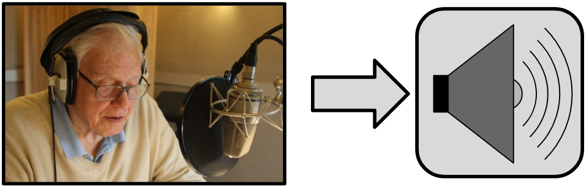
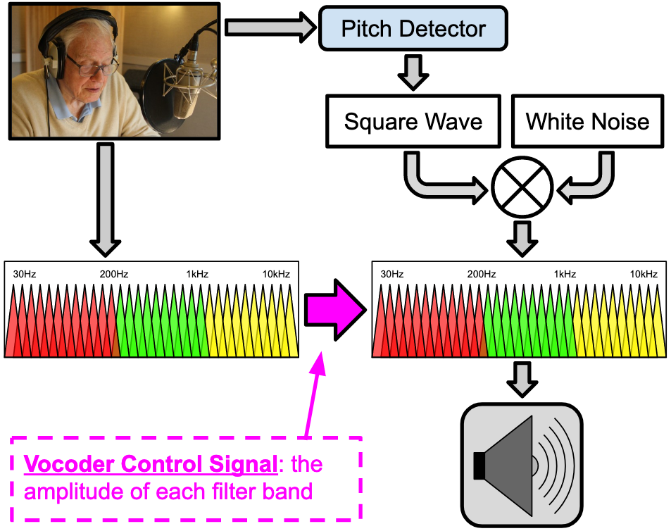
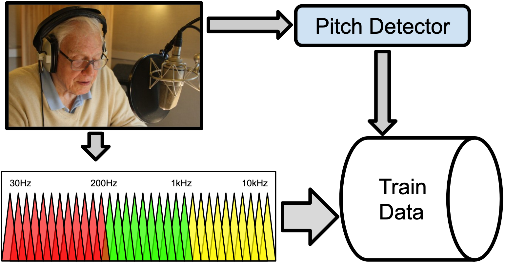
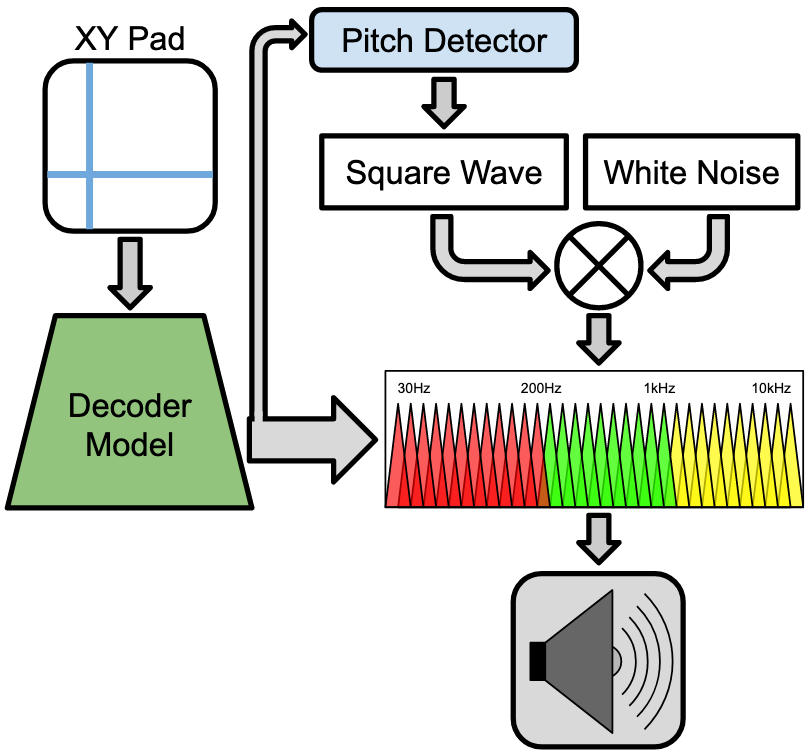

ML-Experiment: Vocoder Autencoder
Below is a noise generating ... thing ... I made, which uses Tensorflow to play back vocal features through a vocoder, in real-time!
See the JS source code here (includes the TFJS inference code, plus a custom-built vocoder), and also the Python notebook used for training in Tensorflow-2.0-beta.
Make "Throat Noises" with an XY Pad

- Press the "Start" button
- Turn your computer's volume up
- Move your cursor over the XY Pad
- TIP: keep near the center and move quickly, to create more interesting sounds...
The Goal
My goal was to create a system, using an autoencoder, that can generate vocal features imn real-time (I have a history of liking throat noises).
This system use a model, trained from the vocal features of an audio recording (I found a audio book of David Attenborough)
You can listen to a small sampling from that original recording by pressing play below:
And below, here is a simple diagram showing that audio file being played:

A Real-Time Vocoder
Now, the problem with making a real-time interactive system, is that any example ML project I could find that trained from audio features was NOT even close to real-time (like the Tacotron-2). This is because of the many data points needed to synthesis something like an FFT spectrum, let alone if it was actual audio samples.
To solve this problem, I decided to create a vocoder, which would greatly compress the number of data points needed, thus allowing it to be real-time.
Press the "Start" button below to hear what that sounds like:
The vocal features of the audio recording are picked up by a series of band-pass filters, which are then used to control the amplitude of more bandpass filters, modulating the timbre of the source square and noise generators. In addition, a simple pitch-detector is used to control the square wave's frequency.
See a diagram of how that works below:

Training in Tensorflow
To generate the data needed for training a model, I recording a couple hours of the vocoder's output, plus the detected pitch.

The train data could then be loaded into a Python notebook, and used to train a convolutional autoencoder.

Once the training was done, the model is loaded back onto the browser using TensorflowJS, so that the XY pad can be used to control the band-pass filters' amplitudes, and the square wave frequency.

Did It Work?
While I was able to make something that sounds throat-ish, my final model does not contain the level of spectral detail I would have wanted. It sounds mostly like gutteral whispering most of the time...
Some places for improvement are:
- Placing the vocoder (and training data) filter frequencies at the mel-spectrogram frequencies, rather than exponentially like I did. My implementation puts too much emphasis on higher frequencies, which are not as important as the lower ones in speech synthesis.
- I forced myself to compress the latent space of my model to 2 variables, which might have been too small for the amount of detail I wanted. However, the interaction of a two-variable XY pad seemed a noble goal.
- The architecture of my model could certainly be improved, as I'm operating with a lot of brand new information to me, plus I didn't want to spend too much time of this since I'm only just learning about ML. Maybe a GAN would create more detail in the output spectral features.